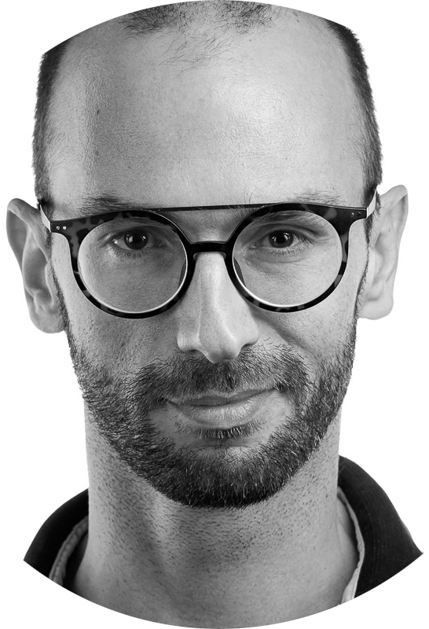

Dear Sygnum Team,
Zurich’s banking landscape is evolving rapidly, and having spent the last decade building mission-critical platforms at UBP and Julius Baer, I have seen firsthand that the future of finance lies in the digital asset economy. Sygnum’s mission to bridge traditional banking with crypto-native trust is exactly where I want to apply my expertise next.
Leading with clarity and fostering innovation has been the cornerstone of my recent work. As a technical advisor to C-level executives and a leader of multicultural engineering teams, I specialize in turning complex architectural challenges into simple, scalable solutions. My recent focus on integrating AI-assisted development into regulated workflows aligns perfectly with your "early adopter" mindset, ensuring high-velocity delivery without compromising on the security standards a banking license demands.
What draws me to Sygnum is your "KISS" philosophy—a principle I’ve lived by while architecting order management systems and FX trade capturing tools. My background as a founder and a technical lead has taught me that the most resilient systems are those built with deliberate simplicity to empower the engineers around them. I am eager to bring this blend of "Banking DNA" and a passion for blockchain to your team to help scale the gateway to Future Finance.
The opportunity to discuss how my experience in the Swiss financial sector can support Sygnum’s growth would be a pleasure. Thank you for your time and consideration